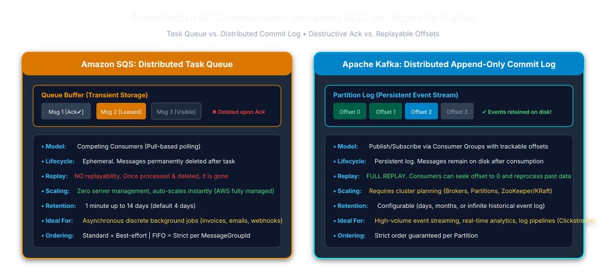

01. Executive Overview & The Problem SQS Solves
Amazon Simple Queue Service (Amazon SQS) is a fully managed message queuing service provided by AWS. It allows distributed microservices, background worker processes, and databases to communicate asynchronously without requiring services to wait for slow downstream tasks.
Normal Production Example: E-Commerce Order Placement
In a standard E-Commerce application (such as Amazon or Flipkart), when a customer clicks "Place Order", multiple downstream tasks must execute:
- Deduct inventory and verify stock
- Save order record in database
- Execute payment verification
- Generate PDF Tax Invoice
- Send email confirmation & SMS notification
- Notify warehouse inventory
PENDING, publishes the work item, and returns HTTP 201 Created after the required durable writes succeed. Actual latency depends on the database, queue, and network. Use an outbox when the database write and queue publish must not diverge.
Amazon SQS म्हणजे काय आणि त्याचा ई-कॉमर्समध्ये काय फायदा होतो?
जेव्हा एखादा ग्राहक Amazon वरून वस्तू खरेदी करतो (Place Order), तेव्हा बिल तयार करणे, ईमेल पाठवणे, आणि गोदामात मेसेज पाठवणे ही सर्व कामे करावी लागतात. जर ही कामे API ने थेट केली, तर गिऱ्हाईकाला स्क्रीनवर १५ सेकंद वाट पाहावी लागेल आणि जर ईमेल सर्व्हर डाऊन असेल तर ऑर्डर कॅन्सल होईल.
SQS चा फायदा: API फक्त ऑर्डर डेटाबेसमध्ये नोंदवतो आणि SQS रांगेत मेसेज टाकून अवघ्या ४० मिलीसेकंदात गिऱ्हाईकाला "Order Placed!" असा मेसेज दाखवतो. नंतर बॅकग्राउंड वर्कर SQS मधून तो मेसेज घेऊन निवांतपणे बिल बनवतात आणि ईमेल पाठवतात. यामुळे ॲप कधीही क्रॅश होत नाही.
02. Core SQS Concepts & Point-Wise Definitions
| Term | Architectural Definition (English) | मराठीत सोपी व्याख्या |
|---|---|---|
| Queue | A distributed, highly available AWS message buffer identified by an HTTPS URL. | AWS वरील सुरक्षित रांग जिथे मेसेजेस येऊन थांबतात. |
| Producer | The service publishing messages to SQS (e.g. Fastify API using SendMessageCommand). |
मेसेज तयार करून रांगेत पाठवणारा प्रोग्राम (उदा. Fastify API). |
| Consumer (Worker) | A background Node.js process polling SQS with ReceiveMessageCommand and executing tasks. |
रांगेतून मेसेज उचलून काम पूर्ण करणारा बॅकग्राउंड वर्कर. |
| Message | A unit of work (JSON payload up to 256 KB) containing task metadata. | कामाची माहिती असणारा डेटा (जास्तीत जास्त २५६ KB). |
| Receipt Handle | An ephemeral operational token returned when receiving a message. Required to delete. | मेसेज वाचल्यावर मिळणारे पावती टोकन, जे मेसेज डिलीट करण्यासाठी लागते. |
| Visibility Timeout | The window (0s–12h; default 30s) during which SQS hides a received message from other workers. | एका वर्करने मेसेज घेतल्यावर तो इतरांना दिसू नये म्हणून लपवण्याचा वेळ. |
| Dead-Letter Queue (DLQ) | A secondary queue isolating failing "poison messages" after exceeding maxReceiveCount. |
वारंवार फेल होणारे खराब मेसेजेस बाजूला ठेवणारी सुरक्षित रांग. |
03. SQS Mechanics & Message Lifecycle

DeleteMessageCommand with the ReceiptHandle, SQS guarantees that if a worker crashes, the visibility timeout will expire and the message will safely reappear for another worker to process.
04. Standard Queue vs. FIFO Queue
| Dimension | Standard Queue | FIFO Queue (.fifo) |
|---|---|---|
| Throughput | Scales to high throughput, subject to service quotas and workload. | Depends on queue configuration, batching, and current AWS quotas. |
| Delivery Guarantee | At-Least-Once Delivery (Occasional duplicates). | Deduplicates producer sends within a 5-minute interval; consumer side effects still require idempotency. |
| Ordering | Best-Effort Ordering. | Strict First-In-First-Out preserved per MessageGroupId. |
| Message Group ID | Not supported. | Mandatory (MessageGroupId). Enables parallel processing across groups! |
05. Amazon SQS vs. Apache Kafka

06. Step-by-Step Guide: How to Setup, Install & Integrate SQS in Node.js (AWS SDK v3)
Step 1: Install Dependencies via NPM
npm init -y
npm install @aws-sdk/client-sqs dotenvStep 2: Setup Environment Variables (.env)
AWS_REGION=ap-south-1
SQS_ORDER_QUEUE_URL=https://sqs.ap-south-1.amazonaws.com/123456789012/order-processing-queue
SQS_ORDER_DLQ_URL=https://sqs.ap-south-1.amazonaws.com/123456789012/order-processing-dlq
Use the AWS SDK default credential provider chain (ECS task role, EC2 instance profile, or EKS workload identity) in deployed environments. Keep static credentials out of source control; use an approved local profile for development.
Step 3: Centralized SQS Client Configuration (config/sqs.js)
import { SQSClient } from "@aws-sdk/client-sqs";
import dotenv from "dotenv";
dotenv.config();
export const sqsClient = new SQSClient({
region: process.env.AWS_REGION || "ap-south-1",
maxAttempts: 3 // Automatic retry with exponential backoff
});
07. Exhaustive Breakdown: Every SQS Method & Command
| SQS Method / Command | Technical Purpose (English) | मराठी सविस्तर स्पष्टीकरण आणि उपयोग |
|---|---|---|
new SQSClient({ region }) |
Instantiates AWS SQS SDK client service object with retry policy. | AWS SQS सर्व्हरशी संपर्क सुरू करणारा मुख्य क्लायंट. |
SendMessageCommand |
Publishes a single JSON task message into the designated SQS queue. | रांगेत नवीन मेसेज पाठवण्यासाठी वापरतात. |
SendMessageBatchCommand |
Sends up to 10 messages in one network call, slashing AWS API cost. | एकाच फेरीत १० मेसेजेस पाठवण्यासाठी वापरतात, ज्यामुळे पैसे आणि वेळ वाचतात. |
ReceiveMessageCommand |
Polls available messages from queue (supports Long Polling). | रांगेतून मेसेज वाचण्यासाठी वापरतात. |
DeleteMessageCommand |
Permanently deletes processed message using ReceiptHandle. |
काम झाल्यावर मेसेज कायमचा काढून टाकण्यासाठी (Delete) वापरतात. |
DeleteMessageBatchCommand |
Deletes up to 10 processed messages in a single batch request. | एकाच वेळी १० मेसेजेस डिलीट करण्यासाठी वापरतात. |
ChangeMessageVisibilityCommand |
Extends invisibility window for long-running worker tasks. | काम संपायला जास्त वेळ लागत असल्यास लपवण्याचा वेळ (Visibility Timeout) वाढवण्यासाठी वापरतात. |
GetQueueAttributesCommand |
Retrieves queue metadata and backlog message counts. | रांगेत किती मेसेजेस बाकी आहेत आणि किती प्रोसेस होत आहेत ते तपासण्यासाठी वापरतात. |
PurgeQueueCommand |
Deletes all messages in the SQS queue without deleting queue. | रांगेतील सर्व मेसेजेस एका झटक्यात साफ (रिकामे) करण्यासाठी वापरतात. |
08. Exhaustive Breakdown: Every SQS Property & Attribute
| SQS Property | Technical Purpose (English) | मराठी सविस्तर स्पष्टीकरण आणि उपयोग |
|---|---|---|
QueueUrl |
Full HTTPS endpoint identifying the target queue. | ज्या रांगेत मेसेज टाकायचा किंवा वाचायचा आहे तिचा HTTPS पत्ता. |
MessageBody |
The task payload data in stringified JSON format (max 256 KB). | मेसेजमधील मुख्य मजकूर किंवा डेटा (JSON स्वरूपात). |
ReceiptHandle |
Ephemeral identifier required to delete or update an in-flight message. | मेसेज वाचल्यावर मिळणारे पावती टोकन, जे मेसेज डिलीट करण्यासाठी लागते. |
MessageId |
Immutable system UUID assigned by SQS upon ingestion. | मेसेज SQS मध्ये आल्यावर SQS ने दिलेला कायमचा युनिक आयडी. |
WaitTimeSeconds: 20 |
Enables long polling up to 20s; can reduce empty receives, with savings dependent on workload. | रांगेत मेसेज येईपर्यंत २० सेकंद थांबून राहणे (लॉंग पोलिंग), ज्यामुळे बिल वाचते. |
VisibilityTimeout: 60 |
Seconds message stays hidden from other workers while active. | मेसेज उचलल्यावर तो इतर वर्कर्सपासून किती सेकंद लपवून ठेवायचा हा वेळ. |
MaxNumberOfMessages |
Maximum messages retrieved per call (1 to 10). | एका वेळी जास्तीत जास्त किती मेसेजेस उचलायचे (१ ते १० पर्यंत). |
DelaySeconds |
Delivery delay before message becomes visible (0 to 15 mins). | मेसेज पाठवल्यावर सुरुवातीला किती सेकंद थांबवून ठेवायचे तो वेळ. |
MessageGroupId |
Mandatory in FIFO. Enforces strict order within the group. | FIFO रांगेत मेसेजचा क्रम सांभाळण्यासाठी लागणारा ग्रुप आयडी. |
MessageDeduplicationId |
FIFO deduplication token valid for a 5-minute window. | FIFO मध्ये ५ मिनिटांच्या आत आलेला डुप्लिकेट मेसेज थांबवणारा टोकन. |
09. Real-World Architecture: E-Commerce Order Fulfillment System

10. End-to-End Production Code: Fastify Producer & Worker
1. Fastify Order Producer Route
fastify.post("/api/orders", async (request, reply) => {
const { customerId, totalAmount, items } = request.body;
const orderNumber = `ORD-${Date.now()}`;
const idempotencyKey = `ORDER_KEY_${orderNumber}`;
// Publish task to SQS
await sqsClient.send(new SendMessageCommand({
QueueUrl: process.env.SQS_ORDER_QUEUE_URL,
MessageBody: JSON.stringify({
orderNumber,
customerId,
totalAmount,
items,
idempotencyKey,
createdAt: new Date().toISOString()
})
}));
// Return only after the required durable writes succeed; latency depends on the workload.
return reply.status(201).send({
message: "Order placed successfully! Processing in background.",
orderNumber
});
});Production consistency note: This snippet focuses on publishing and omits the database write for brevity. Use a transactional outbox and idempotent publisher/consumer when the order record and SQS message must not diverge.
2. Worker Consumer with Long Polling & SQS Deletion
async function startWorker() {
while (!isShuttingDown) {
const response = await sqsClient.send(new ReceiveMessageCommand({
QueueUrl: queueUrl,
MaxNumberOfMessages: 1,
WaitTimeSeconds: 20, // Long Polling
VisibilityTimeout: 60 // Set above expected processing time; extend for long jobs
}));
for (const message of response.Messages ?? []) {
try {
const order = JSON.parse(message.Body);
await fulfillOrder(order);
// Delete message ONLY after fulfillment succeeds!
await sqsClient.send(new DeleteMessageCommand({
QueueUrl: queueUrl,
ReceiptHandle: message.ReceiptHandle
}));
} catch (err) {
console.error("Task failed:", err.message);
}
}
}
}12. Advanced Enterprise SQS Patterns (Senior Interview Hot Topics)


1. The SNS + SQS Fan-Out Pattern (1-to-Many Broadcasting)
Amazon SQS is point-to-point. When 3 different services (Billing, Shipping, Analytics) need the same ORDER_PLACED event, front the queues with an Amazon SNS Topic. The API publishes once to SNS, and SNS automatically replicates duplicate messages into all 3 SQS queues.
2. Handling Messages > 256 KB via S3 Claim-Check Pattern
SQS enforces a hard 256 KB payload cap. For large payloads (e.g. 10 MB invoice PDF or large batch data), upload the file to Amazon S3 and place only the S3 Bucket Name and Object Key inside the SQS message body (the Claim-Check ticket).
3. Worker Autoscaling Mechanics (CloudWatch & KEDA)
Never autoscale workers based on CPU! Autoscale based on Backlog Per Worker:
ApproximateNumberOfMessagesVisible / ActiveWorkerCount using AWS ECS Target Tracking or KEDA (Kubernetes Event-driven Autoscaling) with the aws-sqs trigger.
1. SNS to SQS Fan-Out: यदि Billing, Notifications और Analytics जैसी कई services को एक ही event चाहिए, तो producer उसे SNS topic पर भेज सकता है। SNS प्रत्येक subscribed SQS queue को उसकी अलग copy देता है; हर service अपनी गति से consume करती है।
2. S3 Claim-Check: SQS message size की सीमा 256 KB है। बड़े payload को S3 में रखें और message में bucket/key reference भेजें। Consumer को object पढ़ने की permission चाहिए; सफल processing के बाद retention और cleanup policy लागू करें।
3. Autoscaling: Queue backlog और oldest-message age को worker capacity के साथ देखें। ECS या KEDA scaling में cooldown, maximum replicas और downstream database capacity भी निर्धारित करें।
13. Poison Messages, Dead-Letter Queues (DLQ) & CloudWatch Monitoring

A poison message repeatedly fails processing. SQS moves a message after the configured receive count is exceeded without deletion; it cannot directly observe application failure. Choose maxReceiveCount for the workload and inspect messages before redrive.
Critical CloudWatch Metrics for SQS:
ApproximateAgeOfOldestMessage: How long the oldest task has been waiting. Key SLA latency metric.ApproximateNumberOfMessagesVisible: Backlog size used for horizontal autoscaling via ECS or KEDA.DLQ ApproximateNumberOfMessagesVisible: Must be 0! Triggers PagerDuty alert if > 0.
गलत या असफल message बार-बार process हो सकता है। SQS configured receive count पर redrive करता है; वह application failure स्वयं नहीं पहचानता। सही count चुनें और DLQ message की जाँच के बाद ही redrive करें।
14. Master Interview Questions & Answers (All 32 Q&As with Marathi)
English Answer: Amazon SQS is a fully managed message queue that decouples microservices. In E-Commerce, when an order is placed, Fastify pushes a message to SQS and immediately returns HTTP 201 to the customer. Background workers asynchronously process payments, invoices, and emails without blocking customer checkout.
Amazon SQS ही AWS ची मेसेज रांग सेवा आहे. ई-कॉमर्समध्ये ऑर्डर केल्यावर Fastify API तात्काळ रिस्पॉन्स देऊन मेसेज SQS मध्ये टाकतो आणि बॅकग्राउंड वर्कर बिल बनवणे आणि ईमेल पाठवण्याचे काम करतात, ज्यामुळे सर्वर कधीही स्लो होत नाही.
English Answer: SQS follows Producer–Queue–Consumer architecture: Producer calls SendMessage → SQS replicates across AZs → Consumer calls ReceiveMessage with Long Polling → Message hidden during Visibility Timeout → Consumer processes task → Consumer calls DeleteMessage with ReceiptHandle.
Producer मेसेज पाठवतो, SQS तो सुरक्षित रांगेत ठेवतो. वर्करने मेसेज घेतल्यावर तो तात्पुरता लपवला जातो. काम पूर्ण झाल्यावरच वर्कर पावती टोकन (ReceiptHandle) देऊन तो मेसेज कायमचा डिलीट करतो.
English Answer: SQS is a managed Task Queue where workers pull and delete tasks after completion. Kafka is an append-only commit log where consumer groups track offsets. SQS deletes messages upon acknowledgment; Kafka retains records for days, enabling full replayability.
SQS हे काम झाल्यावर मेसेज डिलीट करते (Task Queue). Kafka मेसेज वहीसारखा कायमस्वरूपी सेव्ह ठेवतो (Event Log) जेणेकरून जुने मेसेज पुन्हा वाचता येतात (Replay).
English Answer: Standard queues scale to high throughput and provide at-least-once delivery with best-effort ordering. FIFO queues preserve order per MessageGroupId and deduplicate producer sends within a five-minute interval; throughput depends on queue configuration and current AWS quotas.
Standard queue में संदेश क्रम से बाहर आ सकते हैं और दोबारा deliver हो सकते हैं। FIFO queue एक ही MessageGroupId के संदेश क्रम से process करती है; पाँच मिनट की deduplication duplicate sends घटाती है, लेकिन consumer processing की exactly-once guarantee नहीं है।
English Answer: Guarantees messages are delivered at least once. Duplicates happen if a worker commits a task, but crashes before calling DeleteMessage. SQS visibility timeout expires and redelivers the message. Handled via database idempotency.
जर वर्करने काम केले पण मेसेज डिलीट करण्याआधी इंटरनेट गेले, तर SQS तोच मेसेज पुन्हा पाठवतो. म्हणून कोडमध्ये Idempotency असणे आवश्यक असते.
English Answer: The window (0s–12h; default 30s) during which SQS hides an in-flight message so other workers cannot receive it.
वर्करने मेसेज उचलल्यावर दुसऱ्या कोणाला दिसू नये म्हणून तो जितका वेळ लपवून ठेवला जातो त्याला Visibility Timeout म्हणतात (डीफॉल्ट ३० सेकंद).
English Answer: If not deleted before the visibility timeout expires, a message can become visible for redelivery. Standard queues are at-least-once; consumers must be idempotent, and retention/DLQ settings still matter.
वर्कर क्रॅश झाला तरी काही अडचण येत नाही. वेळ संपल्यावर तो मेसेज पुन्हा रांगेत दिसतो आणि दुसरा वर्कर काम पूर्ण करतो.
English Answer: Setting WaitTimeSeconds: 20 enables long polling and can reduce empty receives and worker wake-ups. Savings depend on workload; it does not eliminate empty responses in every case.
रांगेत मेसेज येईपर्यंत २० सेकंद थांबून राहणे याला Long Polling म्हणतात. यामुळे रिकाम्या फेऱ्या टळतात आणि AWS चे बिल ८०% वाचते.
English Answer: An isolated queue for messages that fail repeatedly beyond maxReceiveCount, stopping poison messages from burning CPU.
३ वेळा फेल होणारे चुकीचे मेसेजेस बाजूला काढून ठेवणारी रांग म्हणजे DLQ, जेणेकरून मुख्य सिस्टीम अडकून पडत नाही.
English Answer: Threshold of failed receive attempts before SQS automatically transfers the message to the DLQ.
मेसेज किती वेळा अयशस्वी झाल्यावर DLQ मध्ये पाठवायचा ती संख्या (उदा. ३ वेळा).
English Answer: Retry is for temporary transient failures; DLQ isolates permanent poison payloads.
Retry तात्पुरत्या अडचणींसाठी (उदा. नेटवर्क स्लो), DLQ कायमच्या चुकीच्या डेटासाठी असते.
English Answer: Retention is total storage lifespan (14 days max). Visibility timeout is the in-flight processing window (30s default).
Retention म्हणजे मेसेज SQS मध्ये किती दिवस साठवून राहील (१४ दिवस). Visibility म्हणजे वर्करने मेसेज घेतल्यावर तो किती वेळ लपवला जाईल (३० सेकंद).
English Answer: SQS generates a new ReceiptHandle on every receive. It proves the caller holds the active processing lease, preventing race conditions.
प्रत्येक वेळी मेसेज वाचताना SQS नवीन पावती (ReceiptHandle) देते, त्यावरून सिद्ध होते की हाच वर्कर सध्या काम करत आहे.
English Answer: Use @aws-sdk/client-sqs: initialize SQSClient, send with SendMessageCommand, poll with ReceiveMessageCommand, and delete with DeleteMessageCommand.
AWS SDK v3 चे पॅकेज वापरून क्लायंट बनवला जातो, SendMessage ने पाठवला जातो आणि Delete ने डिलीट केला जातो.
English Answer: Wrap in try/catch. On transient error, do NOT delete message; allow visibility timeout to expire for auto-retry.
तात्पुरती एरर आल्यास मेसेज डिलीट करू नये, SQS आपोआप थोड्या वेळाने पुन्हा प्रयत्न करेल.
English Answer: Catch SIGTERM, set shutdown flag to stop polling, await in-flight tasks, then exit cleanly.
सर्व्हर बंद होताना चालू असलेले काम पूर्ण होऊ देणे आणि नवीन मेसेज घेणे थांबवून सुरक्षित बाहेर पडणे.
English Answer: Fetch at most 10 messages per batch and use concurrency limiters (p-limit) to prevent downstream resource exhaustion.
डेटाबेस क्रॅश होऊ नये म्हणून एकाच वेळी मर्यादित कामे (उदा. ५ ते १०) केली जातात.
English Answer: Enforces strict sequence for messages with the same group ID, while allowing parallel processing across different groups.
FIFO मध्ये सारख्या ग्रुपचे मेसेजेस क्रमाने चालतात, पण वेगवेगळ्या ग्रुपचे मेसेजेस एकाच वेळी पॅरलल चालतात.
English Answer: Unique token suppressing duplicate sends within a 5-minute deduplication window.
FIFO मध्ये ५ मिनिटांच्या आत आलेला डुप्लिकेट मेसेज थांबवणारा टोकन.
English Answer: Ensuring repeated execution produces the same business outcome. Essential because SQS standard queues deliver at least once.
एकाच मेसेजवर कितीही वेळा प्रक्रिया झाली तरी दुबार पैसे न कापणे किंवा दुबार ऑर्डर न होणे म्हणजे Idempotency.
English Answer: Fastify creates PENDING order and enqueues to SQS. Horizontally scaled workers consume with long polling and idempotent writes.
फ्लॅश सेलमध्ये सर्व ऑर्डर्स SQS मध्ये साठवून वर्कर हळूहळू सुरक्षितपणे डेटाबेसमध्ये सेव्ह करतात.
English Answer: ApproximateAgeOfOldestMessage (latency), ApproximateNumberOfMessagesVisible (backlog), and DLQ visible messages.
सर्वात जुना मेसेज किती वेळ अडकला आहे आणि रांगेत किती मेसेजेस बाकी आहेत हे तपासणे.
English Answer: Use ChangeMessageVisibilityCommand periodically as a heartbeat to extend the visibility window.
काम संपायला वेळ लागत असेल तर SQS कडून अजून वेळ मागून घेणे (ChangeMessageVisibility).
English Answer: Enforce UNIQUE constraint on idempotencyKey in the database. Catch duplicate collision and discard safely.
डेटाबेसमध्ये युनिक की वापरणे जेणेकरून डुप्लिकेट मेसेज आला तरी डेटाबेस एरर देऊन तो थांबवतो.
English Answer: A corrupt payload causing perpetual worker crashes. Mitigated via schema validation and Dead-Letter Queue.
खराब डेटा असलेला मेसेज जो प्रत्येक वेळी सिस्टीम क्रॅश करतो. याला DLQ मध्ये टाकले जाते.
English Answer: Delay postpones initial delivery when sent. Visibility timeout hides a message after it has been received.
Delay सुरुवातीला मेसेज थांबवून ठेवतो. Visibility Timeout मेसेज वर्करने घेतल्यावर इतरांपासून लपवतो.
English Answer: Use Transactional Outbox Pattern: save order and outbox record in same database transaction; background daemon publishes to SQS.
एकाच ट्रान्झॅक्शनमध्ये ऑर्डर आणि आउटबॉक्स टेबल सेव्ह करणे, जेणेकरून डेटा कधीही गहाळ होत नाही.
English Answer: Place DeleteMessageCommand immediately after the resolved business transaction. If the transaction throws, execution jumps to `catch`, leaving the message in SQS for redelivery.
डेटाबेस ट्रान्झॅक्शन यशस्वी झाल्यावरच शेवटी DeleteMessage चालवणे.
English Answer: SQS poller → payload validation → idempotency check → payment verification & invoice generation → status update → SQS deletion.
मेसेज घेणे, डेटा तपासणे, पेमेंट तपासणे, बिल बनवणे, आणि शेवटी SQS मेसेज डिलीट करणे.
English Answer: IAM Least Privilege, IAM Roles for ECS/K8s, KMS Server-Side Encryption, enforce HTTPS, and VPC Endpoints.
पासवर्ड न ठेवता IAM Roles वापरणे, डेटा एन्क्रिप्शन चालू ठेवणे आणि प्रायव्हेट नेटवर्क वापरणे.
English Answer: Check oldest message age, inspect database CPU and connection saturation, scale worker pods horizontally, and verify batch processing.
डेटाबेसवर लोड आलाय का तपासणे, वर्कर क्रॅश होत नाहीये ना पाहणे, आणि नवीन वर्कर सर्व्हर वाढवणे.
English Answer: Unit test with aws-sdk-client-mock asserting DeleteMessage is only called on success. Integration test with LocalStack.
युनिट टेस्टिंगसाठी `aws-sdk-client-mock` आणि लोकल टेस्टिंगसाठी Docker मध्ये LocalStack वापरणे.
15. Quick Revision Cheat Sheet
- Standard SQS: High throughput, subject to service quotas; at-least-once delivery.
- FIFO SQS: Strict order per
MessageGroupId, 5-min deduplication. - Long Polling: Consider
WaitTimeSeconds: 20to reduce empty receives; measure cost and latency for the workload. - ReceiptHandle: Required to delete. Never delete using MessageId.
- Fan-Out: Use SNS Topic fronting SQS Queues for 1-to-many publish-subscribe.
- Large Payloads (> 256 KB): Use S3 Claim-Check Pattern.
- Autoscaling: Scale workers on Backlog per Task (
VisibleMessages / WorkerCount) via KEDA / ECS. - Idempotency: Enforce at the business/database layer with unique keys.
- DLQ: Set
maxReceiveCountfor the workload; SQS counts receives before redrive, not application failures.
हिंदी Interview Perspective
- Standard SQS at-least-once है। FIFO की पाँच-मिनट deduplication consumer side effects को exactly-once नहीं बनाती; business idempotency आवश्यक है।
- Visibility timeout को expected processing duration के अनुरूप रखें; long jobs में उसे extend करें और duplicates के लिए तैयार रहें।
- Database write और queue publish के dual-write risk का उत्तर transactional outbox तथा idempotent consumer से दें।
- DLQ का receive count application failure नहीं पहचानता। Oldest-message age, backlog, in-flight messages और DLQ alarms monitor करें।